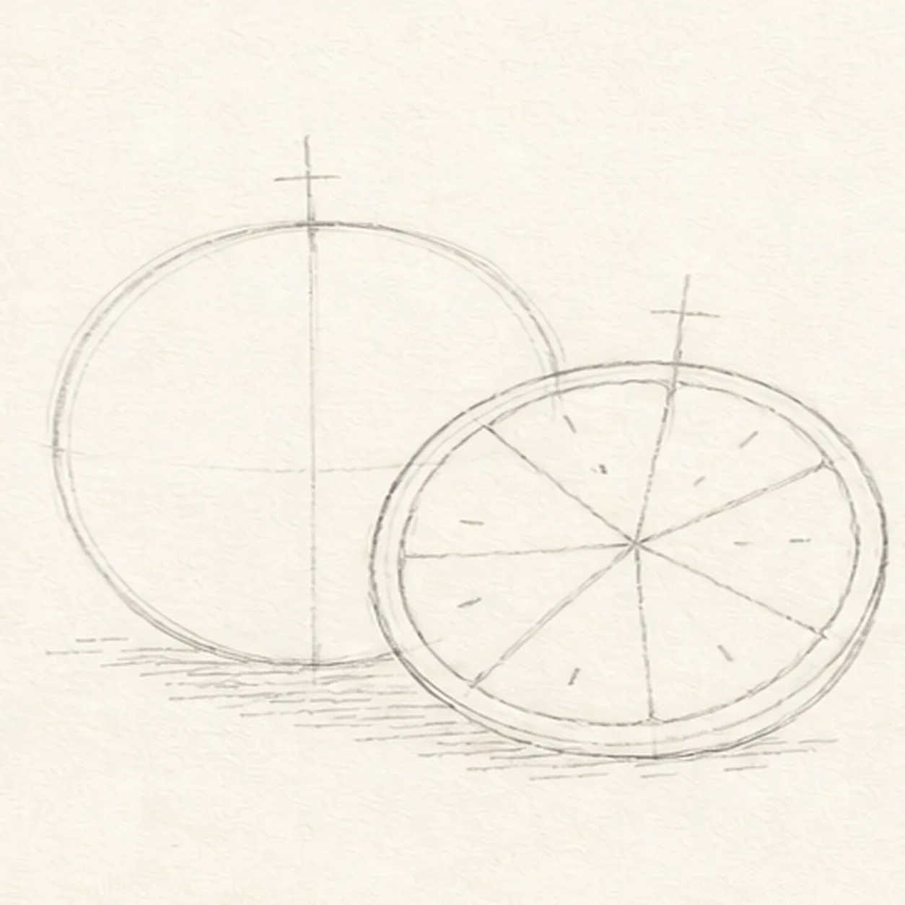
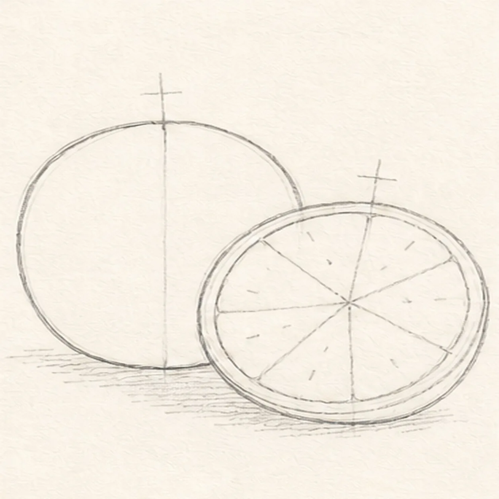
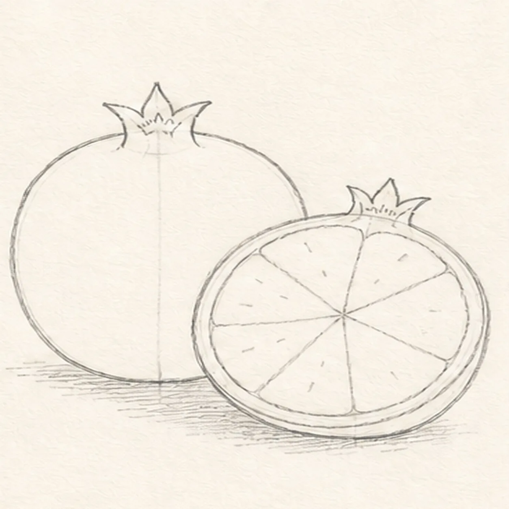
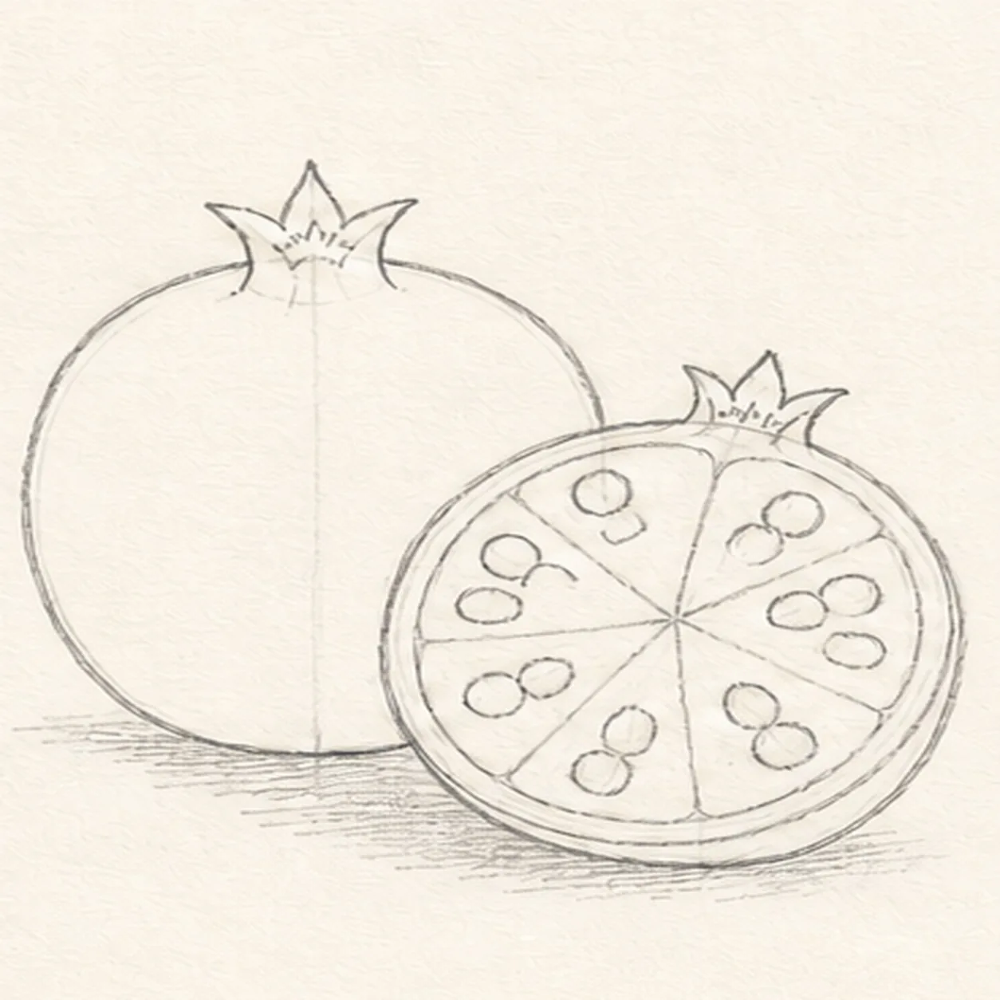
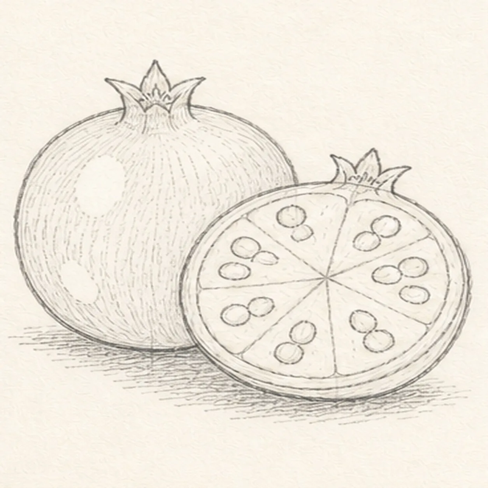
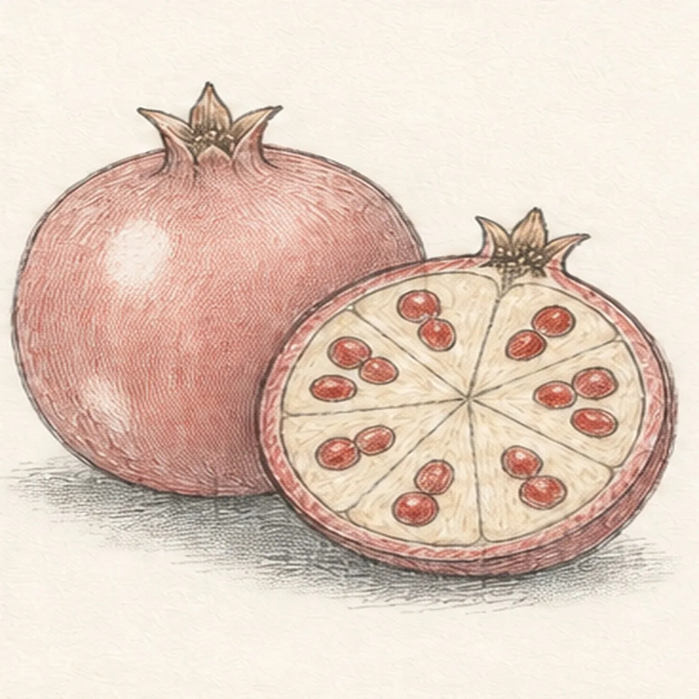
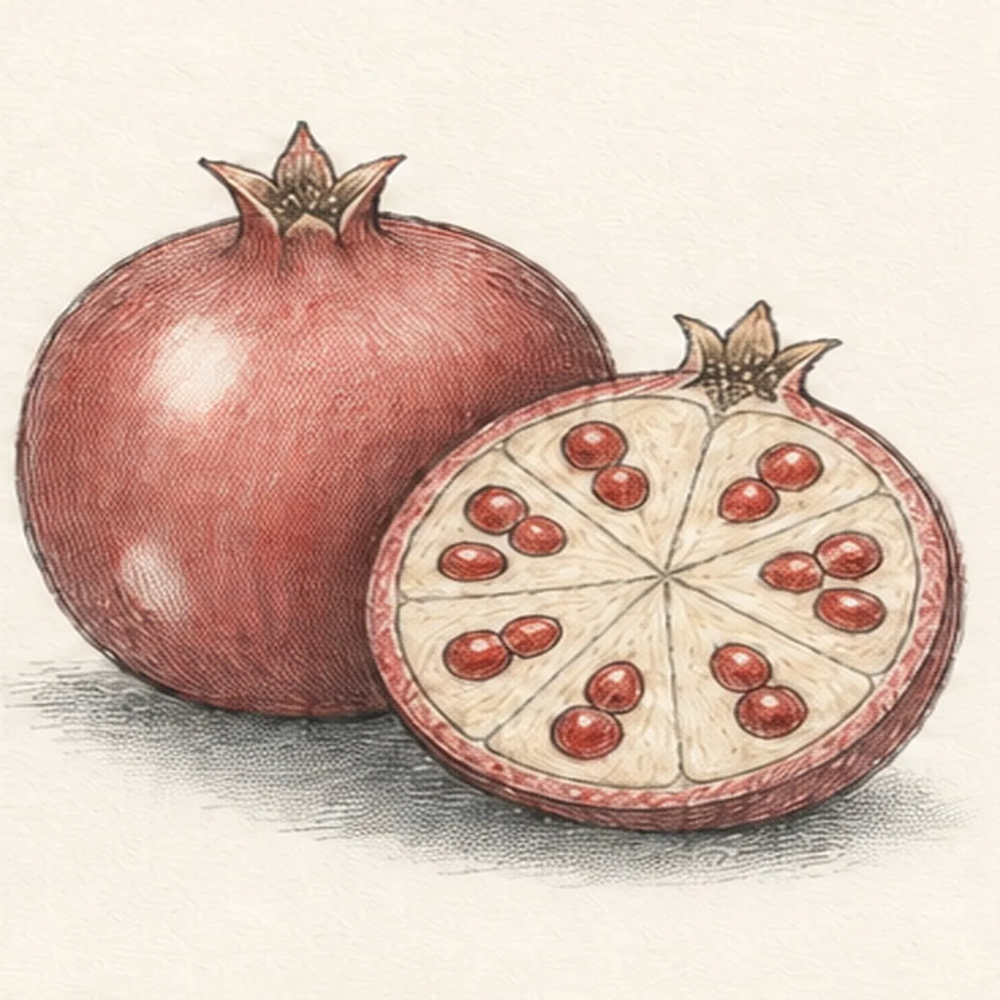

Pencil ready?
Let's draw a pomegranate cut open
Treat this as one small practice round: build the subject lightly, notice the shapes, then darken only the lines that help the finished sketch.
-
01

Arrange the two fruit forms
Use pale HB to place one upright whole-fruit envelope, one overlapping cut-half circle and rind ring, two crown axes, six open membrane routes, exactly twelve seed ticks, and one broken shadow footprint.
Sketch tip: Fix the overlap now: the cut half should cover only the lower-right edge of the whole fruit. Aim every membrane route from the same center and place two seed ticks in each wedge.
-
02

Shape the whole and half
Wrap the guides with one whole pomegranate and one round foreground half, then clarify the thick inner rind ring without moving the overlap.
Sketch tip: Rotate the page for each long fruit curve. Stop the rear fruit contour at the cut half instead of drawing a keeper line through the foreground form.
-
03

Build crowns and membranes
Turn both crown axes into five-point crowns and divide the cut face into exactly six pale membrane wedges around the established center.
Sketch tip: Treat the membranes like uneven pie divisions rather than perfect geometry. Count six wedges and check that every line meets the same center before darkening.
-
04

Place twelve seeds
Turn the twelve placement ticks into exactly twelve plump seed ovals, with two seeds inside each of the six membrane wedges.
Sketch tip: Vary the seed tilt while keeping every pair inside its own wedge. Count by pairs around the fruit so no section quietly gains or loses a seed.
-
05

Map texture and highlights
Add sparse curved peel hatching, two open-paper peel highlights, tiny seed glints, crown creases, and the established broken shadow.
Sketch tip: Curve the hatch marks around the whole fruit and keep the cut face quieter. Leave the highlight shapes open instead of trying to erase them after shading.
-
06

Layer the pomegranate color
Map graphite value, muted crimson peel, ruby seeds, warm-cream membranes, and cool-gray shadow over only the established forms.
Sketch tip: Build two light colored-pencil layers that follow each fruit curve. Keep paper showing between strokes so the pomegranate stays sketchy rather than glossy.
-
07

Clarify seed depth and rind
Deepen the established seed pockets, rind-edge hatching, crown creases, graphite grain, and paper highlights without adding forms.
Sketch tip: Use the darkest graphite sparingly where seeds meet pale membrane. The cut surface should read clearly before you strengthen the outside peel.
-
08
Finish the jewel-toned fruit
Strengthen selected keeper contours, deepen the same mapped graphite and colors, and clarify only the existing seeds, membranes, crowns, highlights, texture, and shadow.
Sketch tip: Count two fruits, two five-point crowns, six membrane wedges, and twelve seeds, then stop while the paper tooth still breaks through the color.